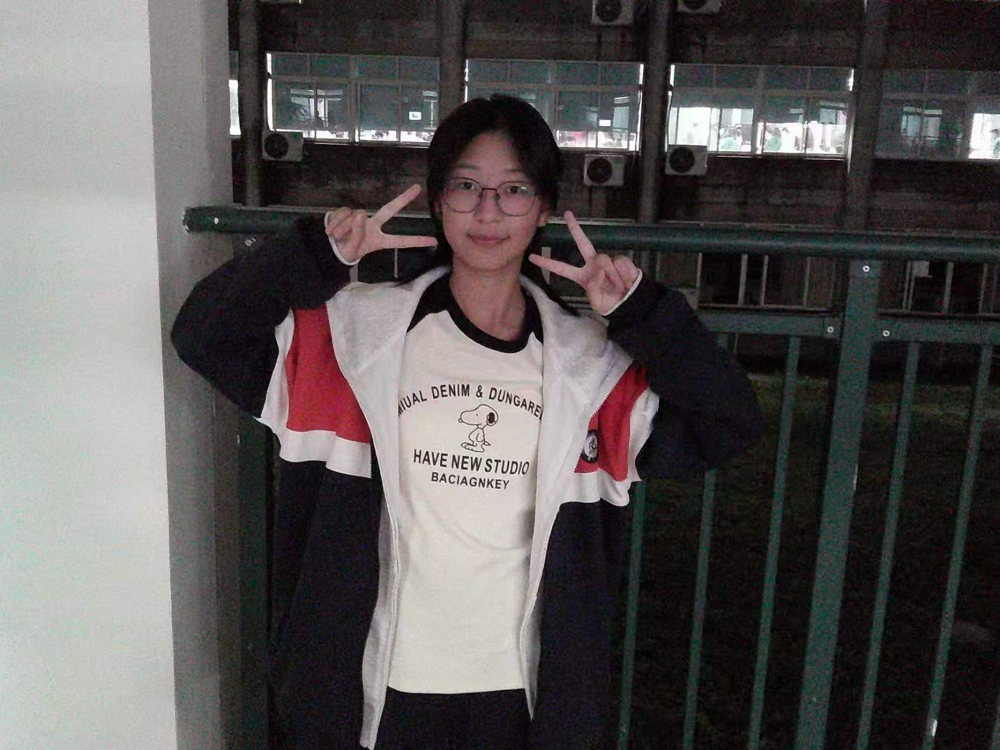

YU // YI // LING
— click to enter —

俞
逸
灵
yú yì líng
✦
163.5 cm · 95 斤
✦
独立安静 · 自由灵魂
SCROLL
◆ 短发 · 日系斜刘海
◆ 圆圆的眼睛 · 圆润脸蛋
◆ 想成为有村架纯
◆ 但周围人都夸她帅
◆ 中性 · 清冷 · 少年感
◆ 温柔与酷感兼具
// CORE PARADOX
女孩子有着一头利落的短发和日系的斜刘海，
同时圆圆的眼睛和脸蛋无不昭示着她想成为有村架纯，
不过周围人大多是夸她帅的。
关于俞逸灵的外貌悖论
✦ PERSONALITY · 内核与表象
01
// 内核 — 真实的她
极度 文静 · 内敛 · 爱思考
喜欢独处，探究事物
在死板压抑的校园里
是少数坚持安静阅读
自我沉淀的存在
喜欢独处，探究事物
在死板压抑的校园里
是少数坚持安静阅读
自我沉淀的存在
02
// 表象 — 外界的她
外人眼中 活泼开朗 · 随和松弛
只有自己清楚——本质极度安静
笑点很低，松弛随性
文武双全，坚持度极高
自带 外热内冷 的矛盾氛围
只有自己清楚——本质极度安静
笑点很低，松弛随性
文武双全，坚持度极高
自带 外热内冷 的矛盾氛围
03
// 日常 — 动静之间
每天打排球 一小时以上
中长跑 · 校园AI跑从不落下
阅读 · 研究 · 探究新鲜事物
居家时播放音乐做事
洗澡时会神经质地哼唱
中长跑 · 校园AI跑从不落下
阅读 · 研究 · 探究新鲜事物
居家时播放音乐做事
洗澡时会神经质地哼唱
✦ EMOTIONAL FRAGMENTS · 情绪碎片
01
轻微厌学 · 不喜欢死板规矩压抑制式化的校园
02
极度向往 疯狂 · 自由 · 无束缚 的松弛氛围
03
对校园评价很低 · 但很珍惜身边的朋友
04
朋友是校园生活唯一的 满分亮点
05
极度依赖、喜欢和 佳佳 待在一起 —— 最重要的情绪寄托
06
对未来迷茫 · 最大的心愿是 待在舒适自由的环境里，睡到地老天荒
VOLLEYBALL
每日必修 · 一小时以上
RUNNING
中长跑 · 校园AI跑
READING
安静沉淀 · 每日阅读
MUSIC
松弛陪伴 · 洗澡哼唱
EXPLORE
探究新鲜未知